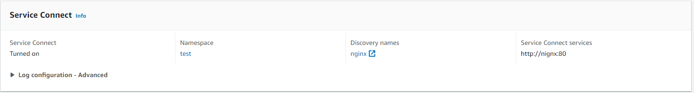
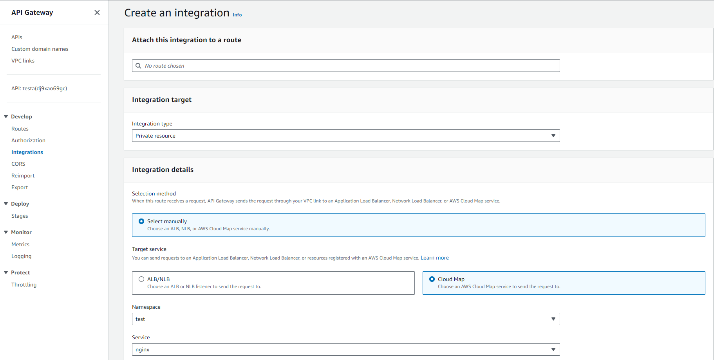

I am currently working on a project right now and wanted to get more familiar with cloud computing platforms.
I had a simple problem, I wanted to run a Minecraft server for my friends that was cheap. I wanted to use a website to be able to turn the EC2 instance on and off.
I realized that I wanted to host website to do this, but AWS ELB (Elastic Beanstalk) and GCloud's AppSync seemed silly to me. It was just using EC2 under the hood, not providing any savings
My goal was to maximize savings while avoiding vendor lockin
ELB was out because it was too expensive (wasting money by running a barly used EC2 instance) and APIGateway and Lambda out as to me they were becoming dependent on the platform.
solution?
AWS Fargate w APIGateway
How this worked was I created my container and hosted it on AWS Fargate, this allowed me to run a container I could pretty much take and put anywhere. This avoided lockin. With fargate only charging for what you use, this also seemed perfect for savings.
Though I ran into a problem
Fargate doesn't allow for statically assigning a DNS name. It did allow for a static public IP, which then I could use a domain but that is expensive and I wanted to stay inside AWS as that was a learning goal for this project.
After much research, I ended up finding this StackOverflow post
Experimenting allowed me to realize you can make your Fargate container use service connect
From here, you can create an APIGateway integration to use the CloudMap (which is automatically created by service connect) to then connect it to a static api url for the frontend usage.
Though I haven't finished my project, the result is a NGINX container running on a static API endpoint that you only pay for the resources you use while providing a static api endpoint for your frontend.

This isn't really useful for big companies, as this situation is specific. Though the idea behind maintaining savings while avoiding vendor lockin is something that could help everyone.